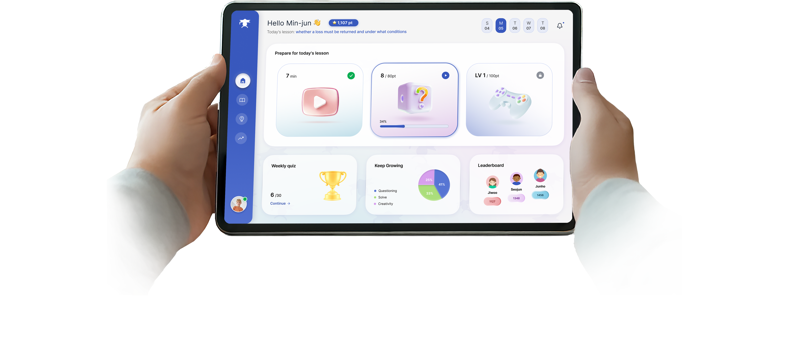

Home.
The Koreans believe that studying the Talmud is the main reason for the success and wisdom of the Jews — as is evident from the fact that they account for 25% of Nobel Prize winners, despite making up only 0.2% of the world's population.
Source: The Times of Israel
Talmind is a tablet app designed to bring authentic Talmud study to elementary, middle, and high school classrooms in Korea.
To help Korean students acquire and embrace Jewish intellectual wisdom.


The Korean population, approximately 50 million people, owns almost every household a "book called the Talmud." The Ministry of Education has even recommended including Talmudic stories in children's studies to develop thinking and intellectual skills.Source
In most families, the book called the "Korean Gemara" is a 40-page collection of Talmudic stories, based on the work of Rabbi Marvin Tokayer from the 1970s, similar to moral tales of the sages or Stories of the Sages.Source
There are private educational institutions known as "Chavruta Academies." The academies were founded by Dr. Park Ki-Ryong from KHU University, in collaboration with associations for Jewish leadership and innovative education.Source
Knowledge gaps and limited cultural context lead to an approach that overlooks fundamental principles, making it difficult to apply effective teaching methodologies.
Hesitate to ask questions in front of their peers due to cultural norms, causing them to miss opportunities for deeper learning.
Struggle to determine whether their children truly understand the material, develop critical thinking, and actively ask questions.
A proper connection to authentic Talmudic topics, with a clear two-stage learning path: first embedding the dry fundamentals clearly, then moving to the more interesting and deeper material.
A critical pedagogy that actively encourages asking questions, with ongoing feedback on progress.
Clear tracking of three parameters measuring their children's skill improvement.

How do I teach students the dry and boring parts?!
The proposed solution:
By bringing it to life through a playful experience and allowing them to be active partners in the learning process.
How can the same game structure work for both Grades 4–6 and Grades 7–12?
The proposed solution:
I trained an AI agent to analyze any Talmudic passage and automatically adapt its content to each grade level, allowing the game structure to remain unchanged.
Before a single pixel — the three-step flow, the daily quiz, and the drag-and-match game, first worked out by hand.

Home.


Home.